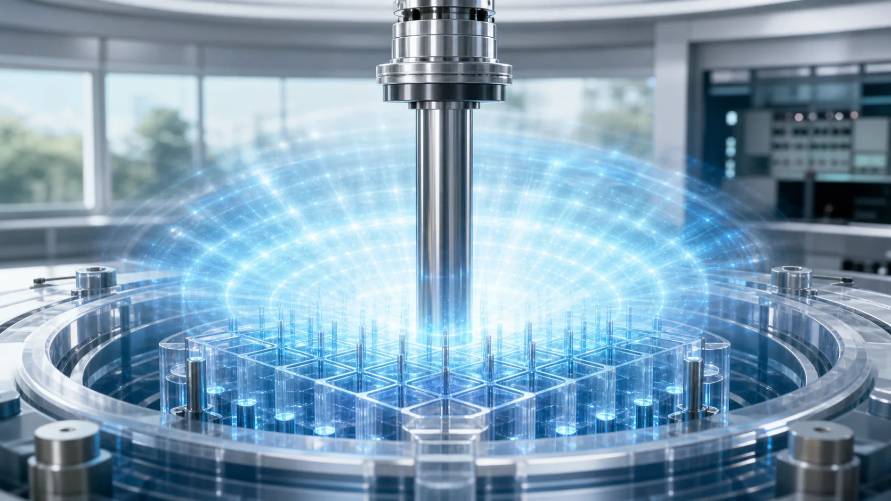
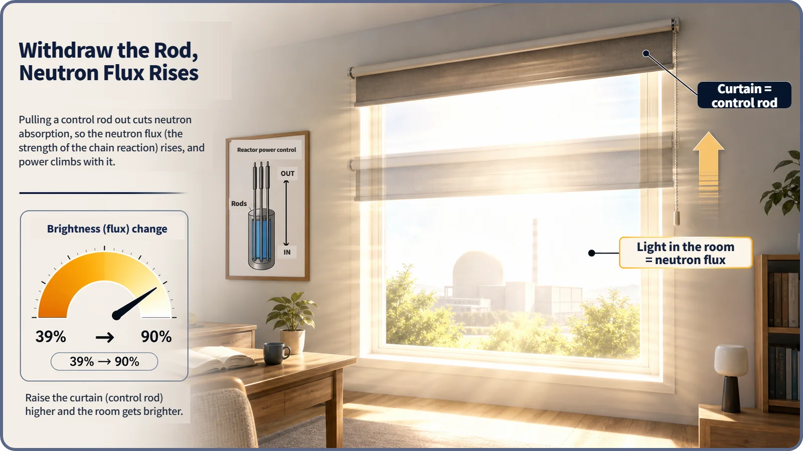
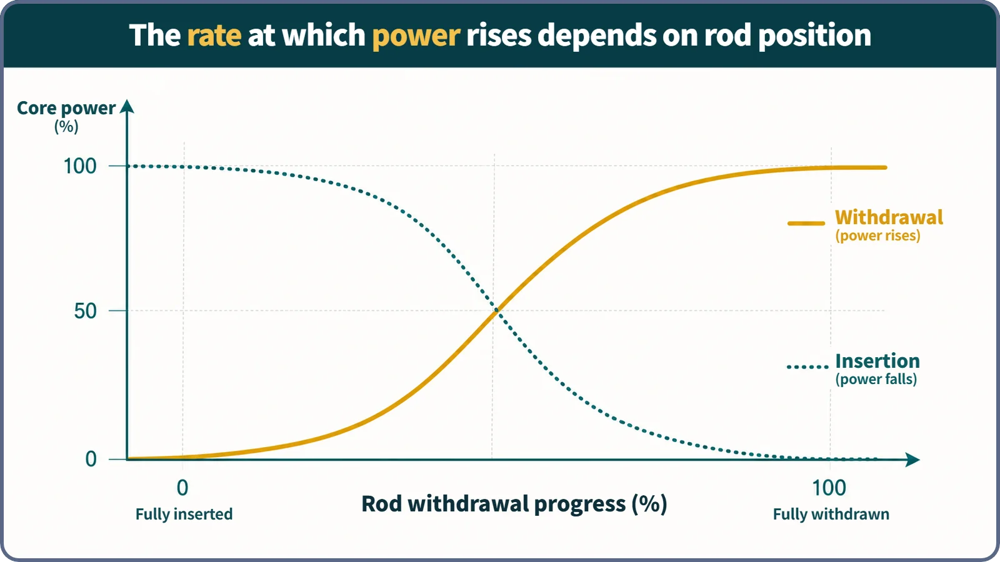

Reactor Kinetics & Reactivity · 111
Open the Curtains and the Room Lights Up — How Control Rod Withdrawal Raises Reactor Power
Pulling a control rod out is insertion with the sign flipped: less absorption, positive reactivity, and power that rises fastest as the rod passes the middle of the core.

Pulling a control rod out of the core removes neutron-absorbing material, so the multiplication factor rises, reactivity turns positive and reactor power starts to climb. The climb comes in two stages, a quick jump and then a gentle rise, and its speed depends on where in the core the rod tip is passing.
The morning move: pulling the curtain back up
Draw a curtain across a window in the evening and the room dims slowly at first, suddenly goes dark as the curtain crosses the bright middle of the window, then eases off again. In the morning we do exactly the opposite: we pull that same curtain back up.
Inside a nuclear reactor, that morning move has a name: control rod withdrawal. A control rod is a rod of neutron-absorbing material that slides in and out of the core. Push it in and power falls; this article follows the opposite move, pulling it out. The short answer: everything about insertion still applies. You just flip the sign.
Opening the curtain = withdrawing the rod
The sunlight coming through the window stands for the neutron flux, a measure of how busily neutrons are moving through the core, and the curtain is the control rod. Uncover more of the window and more light pours in. Pull the control rod out of the core and less of the neutron population gets absorbed, so the neutron flux goes up.
One caution: opening a curtain just removes something that was blocking the light. Likewise, withdrawing a control rod does not physically tug on the fuel. The neutron-absorbing material (boron, hafnium and so on) simply leaves the core, and the share of neutrons that used to be absorbed and lost gets smaller.
When that absorbed share shrinks, the multiplication factor (how much the neutron population grows from one generation to the next) goes up, and the reactivity (how far the core is from perfect balance) moves in the positive (+) direction. Positive reactivity is the signal that power has started moving upward. Insertion makes reactivity negative; withdrawal is its exact mirror image.

After reactivity turns positive: how power climbs
Positive reactivity does not mean power shoots up instantly and is done. The two-stage pattern seen during insertion appears again, in the opposite direction.
Stage 1: the quick jump. The instant reactivity turns positive, core power first rises quickly, on the scale of the neutron generation time (tens to hundreds of microseconds), because the population of prompt neutrons adjusts to the new conditions almost at once. The stockpile of precursors, the fission products that release delayed neutrons a little later, is still at its old level, so the jump is bigger when the added reactivity is bigger but does not run away without limit.
Stage 2: the gentle climb. After the jump, the pace is set by precursors decaying and releasing delayed neutrons. This stage unfolds over seconds, or even tens of seconds, slowly enough for an operator to follow it on the control panel. Once withdrawal stops and reactivity returns to near zero, power finishes the climb and settles at a new, higher level.
Here withdrawal differs from insertion. Insertion only ever makes reactivity negative, so it has nothing to do with prompt criticality, the boundary that matters only when positive reactivity exceeds the delayed neutron fraction. Withdrawal makes reactivity positive, so in principle it sits on the same axis. In normal operation, however, the reactivity added by withdrawing control rods is kept far smaller than that boundary, so routine withdrawal never reaches prompt criticality.
In practice, nobody yanks the curtain all the way up at once
Real control rods are withdrawn gradually and continuously at a set speed. How fast power rises then depends on two things together: how quickly the rod is withdrawn, and where in the core the rod tip is passing right now.
Neutron flux is usually highest near the middle of the core and quieter toward the top and bottom. Starting from fully inserted, the rod tip rises from near the bottom. While it passes the quiet bottom region, withdrawing a given length changes reactivity only a little; passing the busy middle, reactivity increases sharply; at the quiet top, the change becomes gentle again. It is the curtain once more: the room brightens fastest as the curtain passes the bright middle of the window.
Plot core power against withdrawal progress (0% = fully inserted, 100% = fully withdrawn) and you get an S-shaped rising curve, the mirror image of the S-shaped falling curve seen during insertion.

| Rod tip passing | Local neutron flux | Power change per length withdrawn |
|---|---|---|
| Bottom of the core | Low | Gentle |
| Middle of the core | Highest | Steepest |
| Top of the core | Low | Gentle again |
Why this matters in real operation
Knowing both the time pattern (quick jump, then gentle climb) and the position effect lets an operator judge in advance how fast and how sharply power will respond in the stretch the rods are passing through. Core designers weigh the same sensitivity when choosing the number, layout and withdrawal order of the rods, limiting withdrawal speed and setting sequences so that no overly sharp increase in reactivity happens at once. In normal withdrawal, the reactivity added is kept small and manageable.
Two common misconceptions
"Withdrawal is a completely different phenomenon from insertion." No. Insertion's chain (change in absorber → change in multiplication factor → change in reactivity → two-stage response) explains withdrawal with the sign reversed.
"Withdrawing a control rod brings the reactor close to prompt criticality." Not in the normal operating range. Routine withdrawal involves reactivity far smaller than the prompt-critical boundary (the delayed neutron fraction), which matters only in the separate, special case where reactivity actually exceeds it.
Key takeaways
Pulling a rod out shrinks neutron absorption, reactivity turns positive and power rises in two stages: a quick jump, then a gentle climb paced by delayed neutrons. Because the effect is largest near the middle of the core, power versus withdrawal traces an S-curve, and routine withdrawal stays far below the prompt-critical boundary.